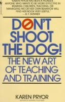

Don't Shoot the Dog! The New Art of Teaching and Training
Book·Karen Pryor, 1984·别毙了那只狗

Uses everyday training examples to explain reinforcement, shaping and behavior change.
- Author
- Karen Pryor
- Year
- 1984
- Difficulty
- Beginner
- Kind
- Practice
- Schools
- Operant Conditioning
- Core theories
- Reinforcement and Shaping
Editions
- Chinese edition 《别毙了那只狗》 [美] 凯伦·布莱尔（Karen Pryor） · tr. 黄薇菁 · 浙江大学出版社 · 2025 Douban 7.9 (43 ratings) Douban page ↗
- English edition Don't Shoot the Dog! The New Art of Teaching and Training Karen Pryor · Revised edition, Bantam · 1999 Open Library ↗